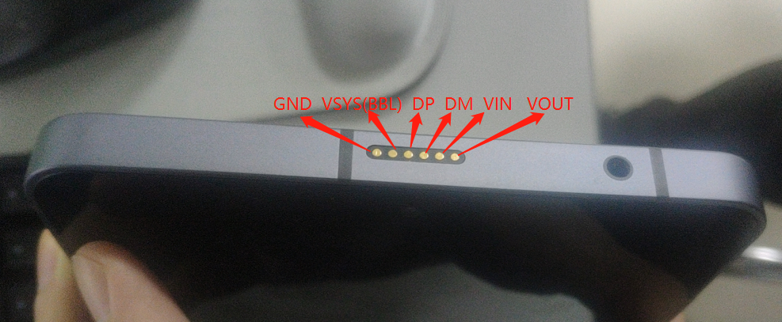
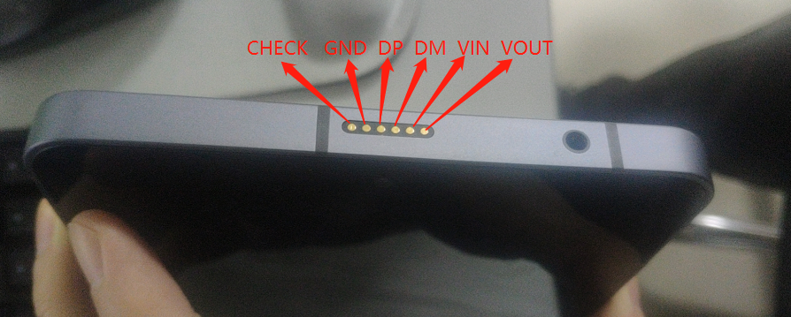
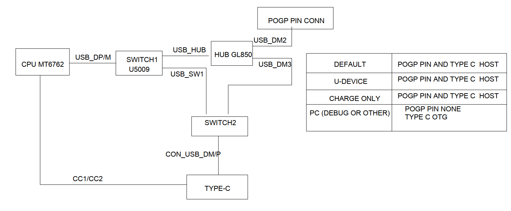
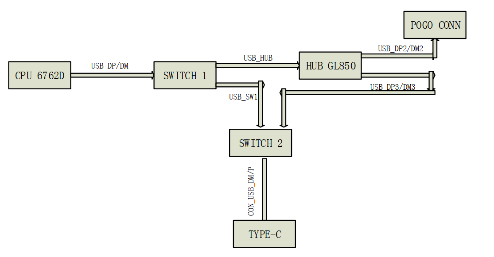
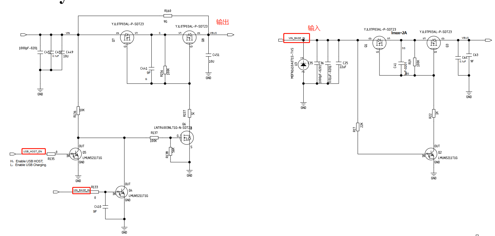
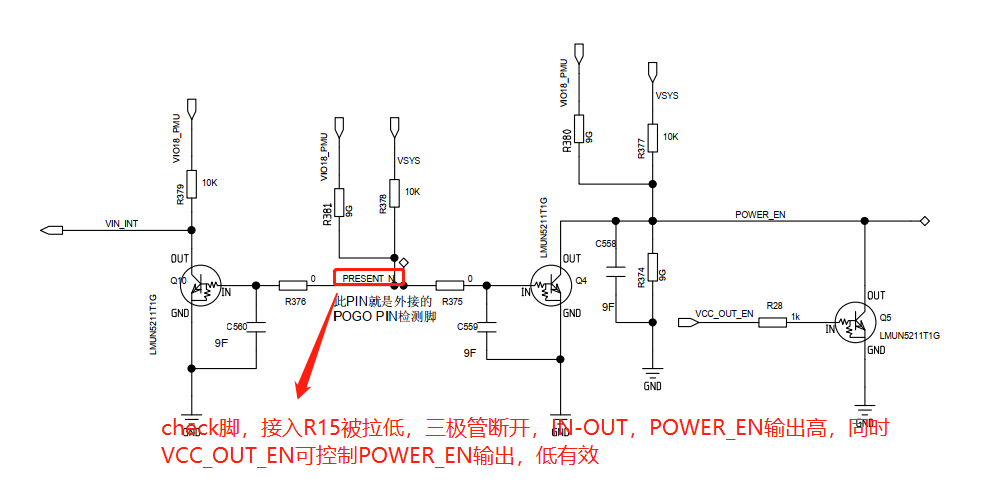

概述
M8项目USB_SWITCH功能介绍。
参考
驱动代码：
硬件架构
硬件架构
V03版本：

V04版本：

主要修改为，增加CHECK脚检测R15状态，插入则打开VOUT电。BBL供电去掉，单独一路VOUT供电，由R15内部转BBL。
1.USB逻辑图


2.Vbus(VIN)逻辑图
USB_HOST_EN为高，VIN是输出方向，输出5v，USB_HOST_EN低电平VIN为输入方向，相当于充电，该功能是监听typec vbus状态改变的，比如当接入R15时，会接收到typec通知TCP_NOTIFY_SOURCE_VBUS打开vbus。

3.Check脚逻辑图
目前软件不控制VCC_OUT_EN，也就是说只要Check脚检测在位，POWER_EN会输出电压，VOUT就会供电，完全由硬件控制。 
4.涉及的GPIO作用
USB_HOST_EN （AE23） 双输入电源方向控制，高电平输出Vbus，低电平vbus输入
USB_SW1_SEL （F24） USB信号切换开关
USB_SW2_SEL （H24） USB信号切换开关
GL850_EN （AD24） 控制HUB芯片POWER
VCC_OUT_EN （AD23） 在POGO端接USB device时候控制5V输出；开机默认5v，由power_control等接口控制，关机时由硬件做插入检测，插入R15输入高，拔出低。
软件交互逻辑
目前需要两种切换，第一是usb role mode切换(host device)，第二是usb swtich通路切换(hub or OTG)。
1.usb swtich通路切换(hub or OTG)
host模式:
USB_SW1_SEL （F24） USB信号切换开关 高
USB_SW2_SEL （H24） USB信号切换开关 高
GL850_EN （AD24） 控制HUB芯片POWER 高
device模式：
USB_SW1_SEL （F24） USB信号切换开关 低
USB_SW2_SEL （H24） USB信号切换开关 低
GL850_EN （AD24） 控制HUB芯片POWER 低
2. usb role mode切换逻辑(host device)
目前是通过cc脚切换host device，目前默认不接任何设备为host。
1.没有皮套
插入sdp(电脑)或者dcp(充电器)，切换成device。
拔出usb，切换成host。
2.有皮套
插入sdp(电脑)或者dcp(充电器)，通知栏弹框，提示用户手动切换成host还是device。
拔出usb，切换成host。
3.灭屏，host等待10s切换成device，休眠。
4.亮屏，device切换成host。
3.VIN方向控制
充电方向:
1.PD_ROLE_SINK 作为输入
2.PD_ROLE_SOURCE 输出，但是驱动不需要做
3.TCP_NOTIFY_SOURCE_VBUS 跟随系统vbus方向
4.usb2.0亮灭屏逻辑
usb20_host.c:
static int musb_fb_notifier_call(struct notifier_block *self, unsigned long event, void *data)
{
struct fb_event *evdata = data;
int blank;
if (event != FB_EVENT_BLANK)
return 0;
blank = *(int *)evdata->data;
DBG(0, "blank: %d\n", blank);
switch (blank) {
case FB_BLANK_UNBLANK: //亮屏
{
bool connect = false;
mtk_musb->lcd_state = blank;
if (mtk_musb->pogo_dev_detect_type != POGO_DETECT_BY_CC) { //条件永远成立，dts配置的是gpio检测pogo dev
if (mtk_musb->default_mode == MUSB_HOST) { //收到亮屏，typec是没接或者接了充电器，则切成host。
if ((mtk_musb->typec_state == TYPEC_UNATTACHED)
|| (mtk_musb->usb_type == POWER_SUPPLY_USB_TYPE_DCP)) {
connect = true;
}
}
else {
if (mtk_musb->r15_state == R15_STATUS_ONLINE) {//收到亮屏，CC没检测到设备，R15在线（因为灭屏且device有10s延迟），则切成host。
if (mtk_musb->typec_state == TYPEC_UNATTACHED) {
connect = true;
}
}
}
}
else {
if (mtk_musb->r15_state == R15_STATUS_ONLINE) {
mt_usb_vbus_on(0);
connect = true;
}
}
if (connect) {
mt_usb_dev_disconnect();
mt_usb_host_connect(100);
}
}
break;
case FB_BLANK_POWERDOWN: //灭屏
{
bool disconnet = false;
mtk_musb->lcd_state = blank;
if (mtk_musb->pogo_dev_detect_type != POGO_DETECT_BY_CC) {
if (mtk_musb->default_mode == MUSB_HOST) {
if (mtk_musb->typec_state == TYPEC_UNATTACHED) {//typec没接设备，默认是host，按下power键则切成device。
disconnet = true;
}
}
else {
if (mtk_musb->r15_state == R15_STATUS_ONLINE) { //默认开机是device,此时是host，按下power键则切成device。
disconnet = true;
}
}
}
else {
if (mtk_musb->r15_state == R15_STATUS_ONLINE) {//如果pogo dev是通过cc检测的，R15在线，按下power键关闭vbus和切成device。
mt_usb_vbus_off(1000);
disconnet = true;
}
}
if (disconnet) {
mt_usb_host_disconnect(10000);
}
}
break;
default:
break;
}
return 0;
}
5.usb_switch亮灭屏逻辑
usb_switch亮灭屏逻辑其实和usb20切换逻辑一样。
static int pax_usb_fb_notifier_call(struct notifier_block *self, unsigned long event, void *data)
{
struct fb_event *evdata = data;
int blank;
struct usb_switch_data *usb_sdata = (struct usb_switch_data *)container_of(
self, struct usb_switch_data, pax_usb_fb_notifier);
if (event != FB_EVENT_BLANK)
return 0;
blank = *(int *)evdata->data;
switch (blank) {
case FB_BLANK_UNBLANK:
if ((usb_sdata->typec_state == TYPEC_UNATTACHED) || (usb_sdata->usb_type == POWER_SUPPLY_USB_TYPE_DCP)) //收到亮屏，typec是没接或者接了充电器，则切成host。
usb_host_switch(usb_sdata, 1);
usb_sdata->lcd_state = blank;
break;
case FB_BLANK_POWERDOWN:
if (usb_sdata->typec_state == TYPEC_UNATTACHED) { //收到灭屏，typec是没接任何设备，延迟10s开启工作队列切换device。
schedule_delayed_work(&usb_sdata->usb_switch_work, msecs_to_jiffies(10000));
}
usb_sdata->lcd_state = blank;
break;
default:
break;
}
return 0;
}
static void do_usb_switch_work(struct work_struct *work)
{
struct usb_switch_data *data = (struct usb_switch_data *)
container_of(work, struct usb_switch_data, usb_switch_work.work);
usb_host_switch(data, 0); //切host
}
6.usb20 role切换逻辑
static int otg_tcp_notifier_call(struct notifier_block *nb,
unsigned long event, void *data)
{
struct tcp_notify *noti = data;
switch (event) {
case TCP_NOTIFY_SOURCE_VBUS: //系统检测DFP打开vbus，UDP关闭vbus
DBG(0, "source vbus = %dmv\n", noti->vbus_state.mv);
if (noti->vbus_state.mv)
mt_usb_vbus_on(0);
else
mt_usb_vbus_off(0);
break;
case TCP_NOTIFY_TYPEC_STATE:
DBG(0, "TCP_NOTIFY_TYPEC_STATE, old_state=%d, new_state=%d\n",
noti->typec_state.old_state,
noti->typec_state.new_state);
/* Add-BEGIN by (shanliangliang@paxsz.com), 2021/08/15 add for M8 usb otg */
mtk_musb->typec_state = noti->typec_state.new_state;
/* Add-END by (shanliangliang@paxsz.com), 2021/08/15 add for M8 usb otg */
if (noti->typec_state.old_state == TYPEC_UNATTACHED &&
noti->typec_state.new_state == TYPEC_ATTACHED_SRC) { //M8 typec识别成source，比如接U盘，切host
DBG(0, "OTG Plug in\n");
mt_usb_dev_disconnect();
mt_usb_host_connect(100);
/* Add-BEGIN by (shanliangliang@paxsz.com), 2021/09/23 add for M8 usb otg */
} else if (noti->typec_state.old_state == TYPEC_UNATTACHED &&
noti->typec_state.new_state == TYPEC_ATTACHED_SNK) { //pogo pin不在位，接了电脑或者充电器，识别成sink，断开host。
if (!((mtk_musb->pogo_dev_detect_type == POGO_DETECT_BY_EXT_PIN) && (mtk_musb->pogo_dev_state == POGO_DEV_STATE_ONLINE))) {
mt_usb_host_disconnect(0);
mt_usb_connect();
}
/* Add-END by (shanliangliang@paxsz.com), 2021/09/23 add for M8 usb otg */
} else if ((noti->typec_state.old_state == TYPEC_ATTACHED_SRC ||
noti->typec_state.old_state == TYPEC_ATTACHED_SNK ||
noti->typec_state.old_state ==
TYPEC_ATTACHED_NORP_SRC) &&
noti->typec_state.new_state == TYPEC_UNATTACHED) {
/* Add-BEGIN by (shanliangliang@paxsz.com), 2021/08/15 add for M8 usb otg */
if (mtk_musb->default_mode != MUSB_HOST) {
if (is_host_active(mtk_musb)) {
DBG(0, "OTG Plug out\n");
mt_usb_host_disconnect(0);//拔出usb，默认device，目前是host，断开host。
} else {
DBG(0, "USB Plug out\n");
mt_usb_dev_disconnect();//拔出usb，默认device，目前是device，断开usb连接。
}
if (mtk_musb->pogo_dev_detect_type != POGO_DETECT_BY_CC) {
if (mtk_musb->r15_state == R15_STATUS_ONLINE) {
mt_usb_host_connect(100);//拔出usb，默认device，R15在线说明目前是host，断开host。
}
}
}
else {
if ((noti->typec_state.old_state != TYPEC_ATTACHED_SRC) &&
(noti->typec_state.new_state == TYPEC_UNATTACHED)) {
if (is_host_active(mtk_musb)) {
//DBG(0, "OTG Plug out\n");
//mt_usb_host_disconnect(0);
} else {
DBG(0, "USB Plug out\n");
mt_usb_dev_disconnect();//拔出usb，默认host，拔出前是TYPEC_ATTACHED_SNK，目前是device，断开usb
}
if (mtk_musb->lcd_state != FB_BLANK_POWERDOWN) {
msleep(50);
mt_usb_host_connect(100);//拔出usb，默认host，拔出前是TYPEC_ATTACHED_SNK，当前是亮屏状态，切成host。
}
}
else if ((noti->typec_state.old_state == TYPEC_ATTACHED_SRC) &&
(noti->typec_state.new_state == TYPEC_UNATTACHED)) {
if (mtk_musb->lcd_state == FB_BLANK_POWERDOWN) {
if (is_host_active(mtk_musb)) {
DBG(0, "OTG Plug out\n");
mt_usb_host_disconnect(10000); //灭屏状态下，SRC->UNATTACHED相当于拔出U盘，当前是host模式，断开host，保证正常休眠。
} else {
DBG(0, "USB Plug out\n");
mt_usb_dev_disconnect();//灭屏状态下，SRC->UNATTACHED相当于拔出U盘，当前是device，断开usb，保证正常休眠？？？不知道什么意思
}
}
}
}
if (mtk_musb->pogo_dev_detect_type == POGO_DETECT_BY_CC) {
if (mtk_musb->r15_state == R15_STATUS_ONLINE) {
mtk_musb->r15_state = R15_STATUS_OFFLINE; //如果R15是CC检测的，usb拔出只有一种情况那就是R15断开了，则更新R15状态。
}
}
/* Add-END by (shanliangliang@paxsz.com), 2021/08/15 add for M8 usb otg */
#ifdef CONFIG_MTK_UART_USB_SWITCH
} else if ((noti->typec_state.new_state ==
TYPEC_ATTACHED_SNK ||
noti->typec_state.new_state ==
TYPEC_ATTACHED_CUSTOM_SRC ||
noti->typec_state.new_state ==
TYPEC_ATTACHED_NORP_SRC) &&
in_uart_mode) {
pr_info("%s USB cable plugged-in in UART mode.
Switch to USB mode.\n", __func__);
usb_phy_switch_to_usb(); //系统默认的
#endif
}
break;
case TCP_NOTIFY_DR_SWAP:
DBG(0, "TCP_NOTIFY_DR_SWAP, new role=%d\n",
noti->swap_state.new_role);
if (is_host_active(mtk_musb) &&
noti->swap_state.new_role == PD_ROLE_UFP) {
if (!((mtk_musb->default_mode == MUSB_HOST) && (mtk_musb->usb_type == POWER_SUPPLY_USB_TYPE_DCP))) {
DBG(0, "switch role to device\n");
mt_usb_host_disconnect(0); //UFP、默认device，当且host，usb类型非DCP，可能是电脑，切device
mt_usb_connect();
}
} else if (is_peripheral_active(mtk_musb) &&
noti->swap_state.new_role == PD_ROLE_DFP) {
DBG(0, "switch role to host\n");
mt_usb_dev_disconnect(); //DFP切host
mt_usb_host_connect(100);
}
break;
}
return NOTIFY_OK;
}
7.usb_switch切换逻辑
static void vbus_en(struct usb_switch_data *data, int on)
{
if (gpio_is_valid(data->usb_host_en_gpio))
gpio_set_value(data->usb_host_en_gpio, 0);
}
static int tcpc_notifier_call(struct notifier_block *nb, unsigned long action, void *noti_data)
{
struct tcp_notify *noti = noti_data;
struct usb_switch_data *data = (struct usb_switch_data *)container_of(nb, struct usb_switch_data, tcpc_nb);
pr_info("%s: action:%d\n", __func__, action);
switch(action) {
case TCP_NOTIFY_SOURCE_VBUS:
vbus_en(data, !!noti->vbus_state.mv); //跟随vbus打开关闭usb_host_en
break;
case TCP_NOTIFY_TYPEC_STATE:
data->typec_state = noti->typec_state.new_state;
if ((noti->typec_state.old_state == TYPEC_UNATTACHED) &&
(noti->typec_state.new_state == TYPEC_ATTACHED_SRC)) {
usb_host_switch(data, 1); //识别为DFP，打开host
}
else if ((noti->typec_state.old_state == TYPEC_UNATTACHED) &&
(noti->typec_state.new_state == TYPEC_ATTACHED_SNK)) {
if (data->pogo_dev_state != POGO_DEV_STATE_ONLINE) {
usb_host_switch(data, 0); //识别为UFP，比如接电脑，且没插入pogo dev，打开device
}
}
else if ((noti->typec_state.old_state != TYPEC_UNATTACHED) &&
(noti->typec_state.new_state == TYPEC_UNATTACHED)) {
if (noti->typec_state.old_state == TYPEC_ATTACHED_SRC) {
if (data->lcd_state == FB_BLANK_POWERDOWN) {
schedule_delayed_work(&data->usb_switch_work, msecs_to_jiffies(10000));//TYPEC_ATTACHED_SRC -> TYPEC_UNATTACHED 且是关屏状态(关屏情况下拔皮套)，延迟10s切device
}
else {//TYPEC_ATTACHED_SRC -> TYPEC_UNATTACHED 且是亮屏状态(亮屏情况下拔皮套)，切回默认状态(host)
usb_host_switch(data, !!data->default_mode);
}
}
else {
usb_host_switch(data, !!data->default_mode);//TYPEC_ATTACHED_SNK -> TYPEC_UNATTACHED 且是亮屏状态(亮屏情况下拔皮套)，直接切回默认状态(host)
}
}
break;
case TCP_NOTIFY_DR_SWAP:
if (noti->swap_state.new_role == PD_ROLE_UFP) {
if (!((data->default_mode) && (data->usb_type == POWER_SUPPLY_USB_TYPE_DCP))) {
usb_host_switch(data, 0); //识别成UFP，不是DCP充电器，切device
}
}
else if (noti->swap_state.new_role == PD_ROLE_DFP) {
usb_host_switch(data, 1);//识别成DFP，切host
}
break;
case TCP_NOTIFY_PR_SWAP:
if (noti->swap_state.new_role == PD_ROLE_SINK) {
vbus_en(data, 0);
}
else if (noti->swap_state.new_role == PD_ROLE_SOURCE) {
vbus_en(data, 1);
}
break;
}
return NOTIFY_OK;
}
8.pogo pin交互逻辑
8.1 usb_switch发送/处理notify
pogo dev设备检测目前放在usb_switch驱动里面，采用gpio中断方式，notify机制发送通知，亮屏情况下，pogo pin插入后将直接切为host模式。notify处理驱动分别是usb_switch和usb20驱动。
驱动提供应用层接口set_usb_switch_mode手动切换host/device，原因是pogo dev接入后，当接入电脑时，为了不切device断开r15，而让用户手动切。
* static int pax_usb_swtich_probe(struct platform_device *pdev)
* pogo_detect_init(data);
* ret = request_irq(irq, pogo_detect_irq_handle, IRQF_TRIGGER_RISING|IRQF_TRIGGER_FALLING|IRQF_NO_SUSPEND|IRQF_NO_THREAD,
* data->r15_nb.notifier_call = r15_status_notifier_call; //
* INIT_DELAYED_WORK(&data->pogo_detect_dwork, pogo_detect_notify_dwork);
* schedule_delayed_work(&data->pogo_detect_dwork, msecs_to_jiffies(500)); //开机，手动识别一次pogo dev，后续都是靠中断
* pogo_detect_irq_handle(gpio_to_irq(data->pogo_detect_gpio), data); //手动调用中断函数
中断处理函数：
static irqreturn_t pogo_detect_irq_handle(int irq, void *dev_id)
{
struct usb_switch_data *data = (struct usb_switch_data *)dev_id;
int level = 0;
int status;
if (gpio_is_valid(data->pogo_detect_gpio)) {
level = gpio_get_value(data->pogo_detect_gpio);
if (level) {
status = POGO_DEV_STATE_ONLINE;
SET_BIT(usb_switch_status,0);
}
else {
status = POGO_DEV_STATE_OFFLINE;
CLR_BIT(usb_switch_status,0);
}
#ifdef CONFIG_PAX_GPIOS_CONTROL
r15_status_notify_call_chain(SET_POGO_DEV_STATE, &status); //发送pogo dev通知
#endif
pr_err("level: %d usb_switch_status: %d\n", level,usb_switch_status);
}
return IRQ_HANDLED;
}
pogo dev拔插事件处理：
1.SET_USB_MODE_SWTICH是对应gpio驱动中接口：
static int set_usb_switch_mode(int value)
{
int val;
PAX_GPIO_DBG("set_usb_switch_mode = %d",value);
if (!value)
val = USB_MODE_DEV;
else
val = USB_MODE_HOST;
r15_status_notify_call_chain(SET_USB_MODE_SWTICH, &val);
return 0;
}
static int r15_status_notifier_call(struct notifier_block *self, unsigned long event, void *data)
{
struct usb_switch_data *usb_sdata = (struct usb_switch_data *)container_of(
self, struct usb_switch_data, r15_nb);
int mode;
if (event == SET_POWER_STATUS) {
usb_sdata->r15_state = *(int *)data;
pr_info("r15_state: %d\n", usb_sdata->r15_state);
}
else if (event == SET_USB_MODE_SWTICH) {
mode = *(int *)data;
pr_info("set usb mode: %d\n", mode);
if (usb_sdata->lcd_state == FB_BLANK_UNBLANK) {
if (USB_MODE_HOST == mode) {
usb_host_switch(usb_sdata, 1);
}
else {
usb_host_switch(usb_sdata, 0);
}
}
}
else if (event == SET_POGO_DEV_STATE) {
usb_sdata->pogo_dev_state = *(int *)data;
pr_info("pogo_dev_state: %d\n", usb_sdata->pogo_dev_state);
if (usb_sdata->pogo_dev_state == POGO_DEV_STATE_ONLINE) {
if (usb_sdata->lcd_state == FB_BLANK_UNBLANK) {
usb_host_switch(usb_sdata, 1); //亮屏情况下，pogo pin插入后将直接切为host模式。
}
}
}
return NOTIFY_OK;
}
8.2 usb20处理notify
void mt_usb_otg_init(struct musb *musb)
{
#ifdef CONFIG_PAX_GPIOS_CONTROL
musb->r15_state = R15_STATUS_OFFLINE;
r15_status_notify_register_client(&musb_r15_st_notifier);
#else
musb->r15_state = 0;
#endif
}
#ifdef CONFIG_PAX_GPIOS_CONTROL
static int musb_r15_st_notifier_call(struct notifier_block *self, unsigned long event, void *data)
{
int state;
int mode;
if (event == SET_POWER_STATUS) {
state = *(int *)data;
DBG(0, "state : %d\n", state);
if (state == R15_STATUS_OFFLINE) {
if (mtk_musb->pogo_dev_detect_type != POGO_DETECT_BY_CC) {
mtk_musb->r15_state = state;
}
}
else if (state == R15_STATUS_ONLINE) {
mtk_musb->r15_state = state;
}
}
else if (event == SET_USB_MODE_SWTICH) {
mode = *(int *)data;
DBG(0, "mode: %d\n", mode);
if (mode == USB_MODE_DEV) {
if (mtk_musb->lcd_state == FB_BLANK_UNBLANK) {
mt_usb_host_disconnect(0);
mt_usb_connect();//手动切换device，对应gpio驱动set_usb_switch_mode接口
}
}
else if (mode == USB_MODE_HOST) {
if (mtk_musb->lcd_state == FB_BLANK_UNBLANK) {
mt_usb_dev_disconnect();
mt_usb_host_connect(100);//手动切换host，对应gpio驱动set_usb_switch_mode接口
}
}
}
else if (event == SET_POGO_DEV_STATE) {
mtk_musb->pogo_dev_state = *(int *)data;
if (mtk_musb->pogo_dev_detect_type == POGO_DETECT_BY_EXT_PIN) {
if (mtk_musb->pogo_dev_state == POGO_DEV_STATE_ONLINE) {
if (mtk_musb->lcd_state == FB_BLANK_UNBLANK) {
mt_usb_dev_disconnect();
mt_usb_host_connect(0);//亮屏情况下，pogo pin插入后将直接切为host模式。
}
}
}
}
return 0;
}
static struct notifier_block musb_r15_st_notifier = {
.priority = 97, //通知优先级？
.notifier_call = musb_r15_st_notifier_call,
};
#endif